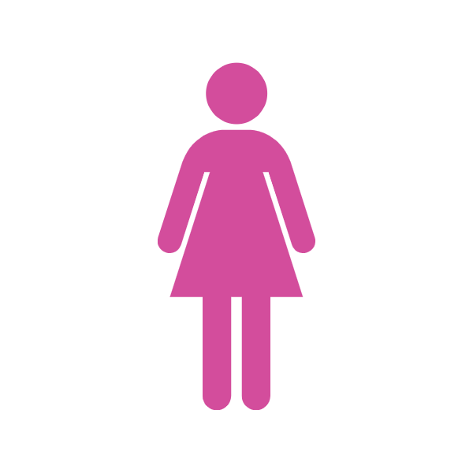

ARGOMENTI ARGOMENTO " L'introduzione di quote nelle imprese e nei Parlamenti è probabilmente un male necessario per correggere queste evidenti disuguaglianze – del resto non è un caso se non si vede neanche un uomo che vota importanti leggi in parlamento con un figlio sulle ginocchia. Tuttavia, l'uguaglianza potrà essere raggiunta solo attraverso la competenza. Il problema non è nella legislazione, ma nei comportamenti e nelle mentalità. Ed è proprio qui che bisogna intervenire per prima cosa. "  Helena Cristina Coelho Vicedirettrice 'Diario Economico' Articolo "Le quote rosa, un male necessario" 22 novembre 2013 ARGOMENTO " La prima ragione (per cui le quote rose non sono la soluzione migliore per incentivare la partecipazione politica delle donne, ndr.) è che il superamento delle barriere culturali non può essere garantito per legge. In secondo luogo, il femminismo radicale è sempre stato contrario a una parità intesa come neutralizzazione del conflitto, oppure come spartizione del potere. È quello che sta accadendo alla Camera: le parlamentari in fondo stanno dando battaglia per garantire alla quota femminile la metà del potere. Capisco che esistano pressioni per correggere i terribili meccanismi di autodifesa maschile, ma la parità obbligatoria al 50% è artificiosa. Occorre riflettere sulla modalità nella quale questa parità viene agita. Perché se nell’Italicum diventasse obbligatorio il 50% delle donne capolista, comunque quelle donne sarebbero scelte dalle segreterie dei partiti, saldamente ancora in mano ai maschi. Sto dicendo che il meccanismo della cooptazione sarebbe lo stesso, soprattutto per la mancanza delle preferenze da parte degli elettori. È chiaro che, come è accaduto con Matteo Renzi nella designazione di un governo per metà al femminile, questi maschi di potere sceglieranno sempre donne a loro prossime, e certamente eviteranno le donne conflittuali. Bisogna capire che la rappresentanza è neutra. " Ida Dominijanni Giornalista e filosofa, firma storica de 'Il Manifesto' Intervista a Laura Eduati ('Huffingtonpost') 10 marzo 2014